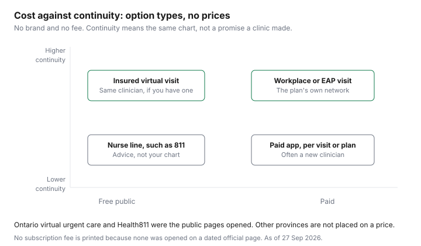

Healthcare · Canada
Virtual Care in Canada: Free Provincial Options vs Paid Apps and What Each Costs
A virtual visit is a phone or video appointment. Whether you pay depends on who is billing, not on the fact that you stayed home. This page opens the Ontario public options that were actually read, then describes paid apps by type. No brand is named. No subscription price is printed, because none was taken from a dated official page. Other provinces' virtual-care pages were not opened, so they are not given a coverage sentence or a fee. If the problem is a minor ailment a pharmacist can assess in Ontario, start with the pharmacist minor-ailments guide before you pay an app.
Key takeaways
- Health811 symptom assessment is described as fast, free, and anonymous. Call 811, TTY 711, or use live chat. A medical emergency is 911.
- Virtual urgent care, on the Health811 page updated 26 June 2025, is a nurse-practitioner visit for urgent problems that are not life-threatening, reached by a referral from a Health811 nurse, for Ontario residents in the regions the page lists.
- As of 1 December 2022, certain video and telephone physician services are insured under OHIP. That is a billing rule. Confirm the clinic is not charging you privately.
- Paid products come in two types: a subscription, or a fee per visit. No price from an official page is printed.
- If you need counselling or you are in crisis, call or text 9-8-8. A virtual medical visit is not that service. The therapy guide is the longer conversation about cost.
What provincial health plans cover for virtual visits (by province, sourced)
Only Ontario pages were opened. Health811's virtual urgent care page, updated 26 June 2025, says Ontario residents in each of six regions can use Ontario Health-approved virtual urgent care with a nurse practitioner.
It is for urgent conditions that are not life-threatening, for people who do not have a primary-care provider or do not have another timely option such as an appointment or a walk-in clinic. The page's examples are a cold, a localized rash, and a minor urinary problem or upset stomach. You reach it by a referral from a Health811 registered nurse: call 811, use TTY 711, use chat, or use the symptom tool, then book. If symptoms worsen, the page points you to an emergency department, urgent care, or 911. A spotlight page says the clinics are funded by the Ontario government and run by Ontario Health Teams, hospitals, or community health centres. No patient fee is printed on those pages, and none is added here.
A separate Ontario physician-billing note, Virtual Care 1, says that as of 1 December 2022 video visits left the Ontario Virtual Care Program and certain video and telephone services are insured under OHIP. That sentence is about how a physician bills. It does not say every virtual visit costs the patient nothing. An insured person whose own doctor bills OHIP for a covered video or phone visit is in a different product from a paid app. Before you join the call, ask the clinic whether the visit is billed to OHIP or billed to you. A private invoice for a virtual visit that was not insured is the kind of bill described in the uninsured fees guide.
British Columbia, Alberta, Quebec, and the other provinces are absent from the table on purpose. Their virtual-care pages were not opened. Call the number your province publishes, and read that page, before you treat Ontario's 811 pathway as national.
Paid virtual care apps: subscriptions, per-visit fees and what's included
Paid virtual care, as a type, is either a subscription that covers a period of access or a charge for each visit. Some products combine both: a membership, then an extra amount if you actually book.
What is included varies. A visit might be the whole product. Messaging, a follow-up, or a prescription might be included, or they might be a second charge. No brand page with a dated price is listed here, so this article does not print a monthly fee, a per-visit fee, or a comparison. Ask three questions in writing: the price in dollars, what the price includes, and whether you see the same clinician next time.
A paid app does not become an OHIP service because the clinician is in Canada. If the receipt says you paid the company, you paid the company. Keep it if you later test the amount against the medical expense tax credit. The credit's rules are on the medical-expense guide, and this page does not repeat the threshold.
Virtual care through workplace benefits and EAPs
A workplace booklet or an employee-assistance program can include a virtual visit with the plan's own clinicians. That visit is paid, or part-paid, by the employer according to the booklet.
No booklet is listed here, so no session count, no per-visit cap, and no list of covered specialties is printed. Read the certificate before you subscribe to an app you would be paying twice for. How a health spending account at work interacts with eligible health bills is the employer health spending account guide. Drug claims that follow a visit, including whether the plan requires a specific pharmacy, are the workplace drug coverage guide.
An employee-assistance conversation is often short-term and is not your family doctor's chart. If the issue is ongoing counselling, or if you are in crisis, call or text 9-8-8, the suicide crisis helpline, and use the therapy guide for what a course of counselling can cost. Do not treat a virtual urgent-care visit as a substitute for that help.
What virtual care can't do: exams, some prescriptions, continuity
A video visit cannot do a hands-on exam. Anything that needs a stethoscope on your chest, a swab, or a look at a joint the camera cannot see properly has to move to a clinic.
Continuity is a separate limit. It is high when the same clinician, or the same clinic chart, carries the history. It is low when each booking assigns a new clinician who sees you once. The chart on this page places option types on that axis. It is a description of the type, not a score for a named company.
Prescribing is a decision the clinician makes on the visit. No statute opened for this article says a virtual visit can never result in a prescription, so this page does not say that. Ontario's drug-coverage page does say a pharmacist cannot transfer a prescription for a controlled drug, a controlled-drug preparation, or a narcotic between Ontario pharmacies. The page's examples include oxycodone, Dilaudid, Xanax, and diazepam. If that is the medicine you need, ask before you book whether the visit can deal with it. A paid app that cannot is the wrong door, even at a low advertised price. Cash fees you pay anyway are the uninsured fees guide.
Health811 and other free nurse lines
Health811 is the Ontario nurse line this page checked. Call 811.
TTY is 711. Live chat is on the symptom-assessment page, which was updated 11 August 2026. That page says to call 911 for a medical emergency. Symptom assessment is described as fast, free, and anonymous. A registered nurse can refer you onward, including to virtual urgent care when you are in a region the virtual urgent care page covers and you do not have a timely alternative. The nurse line is advice and a route to the next service. It is not your ongoing chart.
Other provinces publish their own nurse-line numbers. Those pages were not opened, so this article does not list them and does not call them free by assumption. Use the number printed by your province.
Choosing an option: a decision table
Match the need to the payer first. A free public route that fits the problem beats a subscription you have not priced. A paid type is reasonable when no public route is available and you know the fee. The table leaves the fee column blank on purpose.
| Need | Free public option this page opened | Paid option type | What to check |
|---|---|---|---|
| Urgent, not an emergency, and no timely clinic | Health811 referral to virtual urgent care with a nurse practitioner, in the Ontario regions listed on the page updated 26 Jun 2025. | A per-visit app, if you are outside those regions or you are turned away. | Call 911 if symptoms worsen. Confirm you are not being billed privately for the public visit. |
| The clinician who already holds your chart | Ask that clinic whether the video or phone visit is billed to OHIP. Certain video and telephone services have been insured since 1 Dec 2022. | A workplace or employee-assistance visit, if the booklet includes one. | The billing note is not a printed patient fee of zero. Ask the clinic. |
| A problem a pharmacist can assess in Ontario | The pharmacist minor-ailments visit, for a listed ailment. See that guide for who is not charged. | You do not need an app for an assessment the pharmacy can do. | The drug, if one is prescribed, is a separate cost. Workplace drug rules may still apply. |
| Counselling, or a crisis | 9-8-8 for a suicide crisis. Health811 can route a health question. It is not a course of therapy. | Employee-assistance sessions if the employer offers them. A therapist you pay, priced in the therapy guide. | No session count is listed here. Read the booklet. |
| A prescription question, including a controlled drug | The prescriber who already knows the medicine, or the pharmacist. Ontario does not allow a pharmacy transfer of a controlled drug or narcotic. | A paid visit only after you have asked whether that visit can deal with the medicine. | Prescribing stays a clinical decision. No brand price is printed here. |

Sources & date stamps
- Ontario Health811, virtual urgent care, updated 26 Jun 2025. Six regions, nurse-practitioner visits for urgent non-life-threatening problems, referral from a Health811 nurse by phone (811), TTY 711, chat, or the symptom tool. Clinics funded by the Ontario government. Checked 27 Sep 2026.
- Ontario Health811, symptom assessment, updated 11 Aug 2026. Call 811, TTY 711, live chat. Call 911 for a medical emergency. Symptom assessment described as fast, free, and anonymous. Checked 27 Sep 2026.
- Ontario, physician virtual-care billing (Virtual Care 1). As of 1 Dec 2022, certain video and telephone services are insured under OHIP. The note does not print a patient fee of zero. Checked 27 Sep 2026.
- Ontario, Get coverage for prescription drugs, updated 18 Aug 2026. A controlled drug, controlled-drug preparation, or narcotic cannot be transferred between Ontario pharmacies. Checked 27 Sep 2026.
- No other province's virtual-care page, and no paid-app price list, was opened. Fees and coverage outside Ontario are omitted. 9-8-8 is the suicide crisis helpline named when counselling or crisis comes up.
Frequently asked questions
Is virtual care free in Canada?
Some Ontario public options are. Health811 describes symptom assessment as fast, free, and anonymous, and its virtual urgent care page, updated 26 June 2025, can refer eligible residents to a nurse practitioner for urgent problems that are not emergencies. A physician billing note says that, as of 1 December 2022, certain video and telephone services are insured under OHIP, which is not the same as a printed patient fee of zero. Other provinces' virtual-care pages were not opened, so they are not described here.
Do paid virtual care apps charge per visit?
Some products are a subscription and some charge per visit. No brand and no price was opened on a dated official page, so this article prints neither. Ask whether the fee is a membership, a visit, or both, and whether a prescription or a follow-up is included. A workplace or employee-assistance visit can be a third path, on the booklet's terms.
Can a virtual doctor prescribe?
Prescribing is a clinical decision on that visit. This article does not state a blanket rule, because no statute opened here says a virtual visit can never prescribe. Ontario's drug-coverage page does say a controlled drug, a controlled-drug preparation, or a narcotic cannot be transferred between Ontario pharmacies. Ask, before you book, whether the visit can deal with the medicine you need.
Does my benefit plan include virtual care?
It might. Employer booklets and employee-assistance programs sometimes include a virtual visit, and no session count is listed here, so none is printed. Read the booklet, and the employer health spending account guide, before you pay an app. A benefit-plan visit is a different product from an OHIP-billed visit with your own clinician.
What is Health811?
Health811 is Ontario's nurse line: call 811, use TTY 711, or use live chat. The symptom-assessment page, updated 11 August 2026, says to call 911 for a medical emergency. A registered nurse can refer you to virtual urgent care where the page lists that service. Other provinces publish their own nurse-line numbers, and those pages were not opened here.
Researched and drafted with AI assistance and fact-checked against official Canadian sources. How we create content.